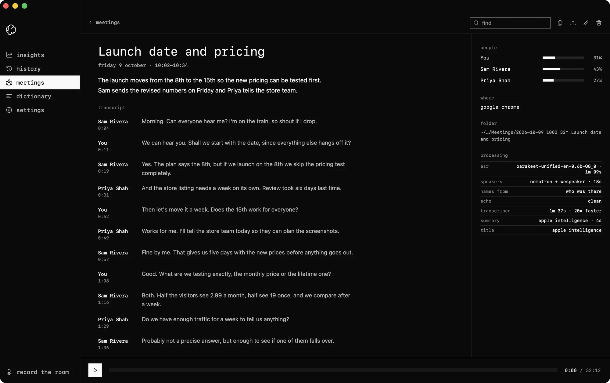
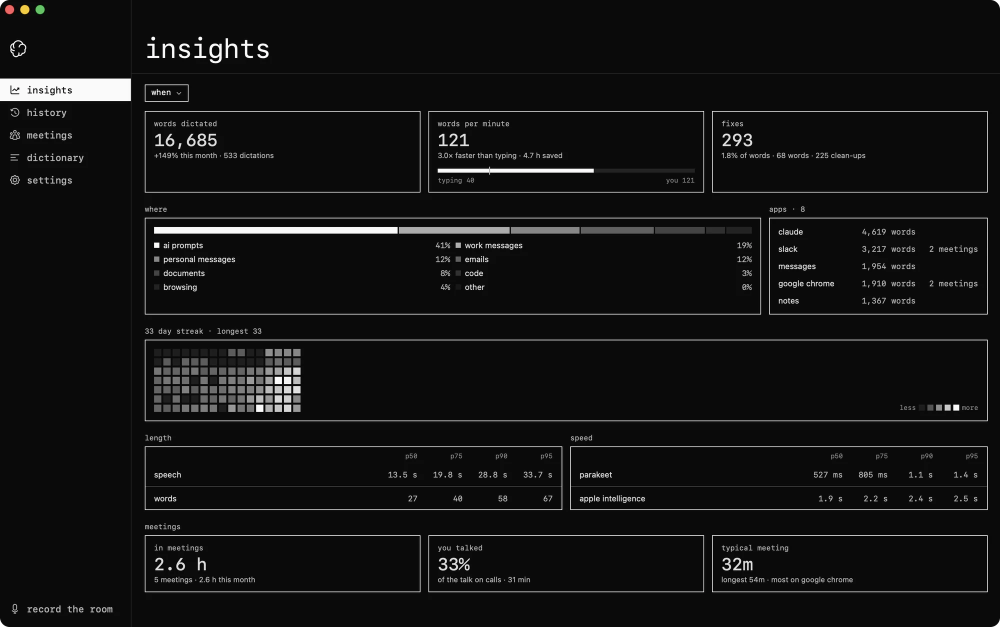

offline dictation and meeting transcription.
a free mac app that runs the latest on-device models, with a local mcp server and voice embeddings for accurate speaker attribution.
a free alternative to granola and wispr flow for those who want to own their data.
You’re in control of your data. Meetings and dictations are some of the most sensitive data you own, so type me it keeps them on your Mac: no account, no cloud, and no third parties. You can read, export, share or delete it.
Hold fn, speak, and it types wherever your cursor is. Apple Intelligence tidies the text on your Mac, and it learns your vocabulary from the corrections you make.
It matches names to voices in any meeting, not just third-party meetings like Slack and Google Meet. Voices are biometric data under GDPR, so that matching runs on your machine and never leaves it.
Running NVIDIA’s Parakeet and Nemotron models on Apple silicon, with quality close to the paid cloud tools. A local MCP server lets Claude or any assistant you choose read your meetings and write summaries that know who said what, on your terms.
dictation
simply hold fn and speak.
it types wherever your cursor is, like a slack message or a claude prompt. it adds punctuation and capitals, and can write digits, format lists and cut filler words.
meetings
when a call starts in any app, type me it asks if you want to record it. it records your microphone and the call’s audio, and transcribes them when the call ends.
summary
apple intelligence on your mac writes two sentences and a title for each meeting.
sharing
share a meeting as a file. any text editor reads it as markdown.
speakers
on a call it tells the voices apart and takes their names from the slack or meet window. in a room, start a recording from the menu bar or a shortcut and it splits one microphone into voices. a voice it doesn't know opens with a clip playing: type a name, pick someone from past calls, or merge it with a voice you've named.
turn on learn voices and it suggests names from earlier meetings.
mcp
ask claude, codex or any ai app about your meetings. add type me it to any app that supports mcp, and it can list, read and search your transcripts.
list_meetingsget_meetingsearch_meetingsmeeting_stats

> what did sam say he'd send on friday? search_meetings friday · 1 match Sam said he'd send the revised numbers on Friday. That was in this morning's "Launch date and pricing" call.
insights
words dictated, words per minute against typing, streaks and apps. for meetings: hours on calls and your share of the talk.
